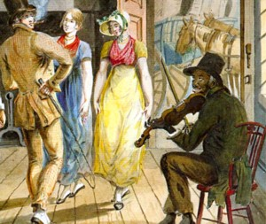

by
Stefan Bielinski
The second Federal census of 1800 listed the first ward home of John Top. Calling him "a free Negro," his household consisted of six "free people of color."
John Topp's home was located in the heart of the old South End. In 1799, his house and lot were valued modestly. Beginning with the first published city directory in 1813, he was identified as a musician at 5 Ferry Street - a location close to the Albany waterfront. Perhaps he was a fiddler similar to the individual depicted by Pavel Svinin, a young Russian diplomat and contemporary artist who presented interesting American life scenes based on his travels in the United States during the second decade of the nineteenth century.
By 1815, Top's Afro-Albanian neighbors were clustered in four households around the South ferry.
John Top's household was configured on the census of 1830. In that year, he was listed in the directory on South Pearl Street. Perhaps Albany residents Lewis and William H. Top[p] were his kinsmen. We seek defining information on his origins and ultimate fate!
notes
 Sources: The life of John Top is CAP biography
number 7750. This sketch is derived
chiefly from community-based resources.
Sources: The life of John Top is CAP biography
number 7750. This sketch is derived
chiefly from community-based resources.
Detail from a watercolor entitled "Merrymaking at a Wayside Inn" traditionally attributed to Russian diplomat Pavel Petrovich Svinin c. 1811. However, the creator of the so-called Svinin portfolio may have been John Lewis Krimmel, a German-born, American artist (1786-1821). Published and presented on the Internet in many forms.
first posted: 11/10/04; updated 8/24/11